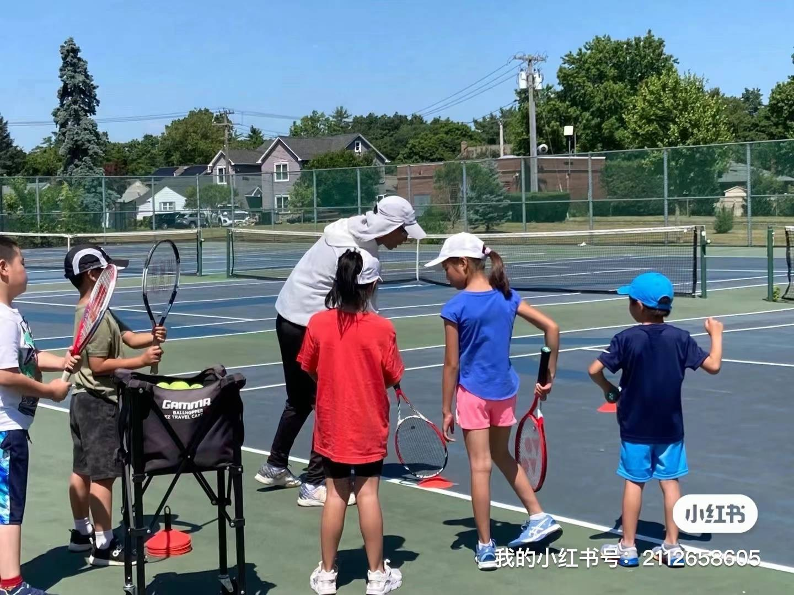

United Through Sports (UTS)
About US
Spreading love on the tennis court, making every child visible

United Through Sports is a nonprofit tennis organization based on Long Island, New York.
We focus on providing free tennis lessons and growth support for special needs youth, including those with autism and ADHD.
We believe that tennis is more than just a sport; it’s a vital bridge for children to express themselves, build confidence,
and engage with society.
Our mission is to create a safe and inclusive sports platform for special needs youth and their families through our “Love and Care Program,” while also fostering a spirit of giving back and mutual assistance within the community. Through tennis, we aim to help every child discover their potential, feel love and respect, and learn how to spread that love to others in the process.
Our Core Principles- 1. Inclusion and Acceptance We believe that every child deserves acceptance and respect, regardless of their abilities. Here, every child is a star who can experience joy, growth, and a sense of achievement through tennis.
- 2. Sport and Growth Tennis is not just about physical exercise; it also improves focus and fosters teamwork. Our programs teach tennis skills while also enhancing children’s social abilities, emotional management, and self-identity.
- 3. Spreading Love As recipients of support, it’s equally important to give back to society. Through our charitable initiatives, every participating family has the opportunity to contribute by donating materials, funds, or time, creating a cycle of love and generosity.
Our Goal
In the next five years, United Through Sports aims to become the most impactful nonprofit tennis organization for special needs youth in the New York area. We are committed to creating a community filled with love and warmth, where more children can find confidence, make friends, and learn how to bring love and support to others through tennis.
People
TBD
Resources